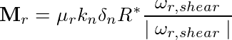

gran rolling_friction cdt¶
Syntax¶
rolling_friction cdt
LIGGGHTS vs. LAMMPS Info:
This part of pair gran and fix wall/gran is not available in LAMMPS.
Description¶
This model can be used as part of pair gran and fix wall/gran
The constant directional torque (CDT) model adds an additional torque contribution, equal to
w_r_shear is the projection of w_r into the shear plane, where w_r = w1-w2
If the rolling friction model is activated, the coefficient of rolling friction (rmu) must be defined as
fix id all property/global coefficientRollingFriction peratomtypepair n_atomtypes value_11 value_12 .. value_21 value_22 .. .
(value_ij=value for the coefficient of rolling friction between atom type i and j; n_atomtypes is the number of atom types you want to use in your simulation)
Warning
You have to use atom styles beginning from 1, e.g. 1,2,3,…
(Ai) Jun Ai, Jian-Fei Chen, J. Michael Rotter, Jin Y. Ooi, Powder Technology, 206 (3), p 269-282 (2011).